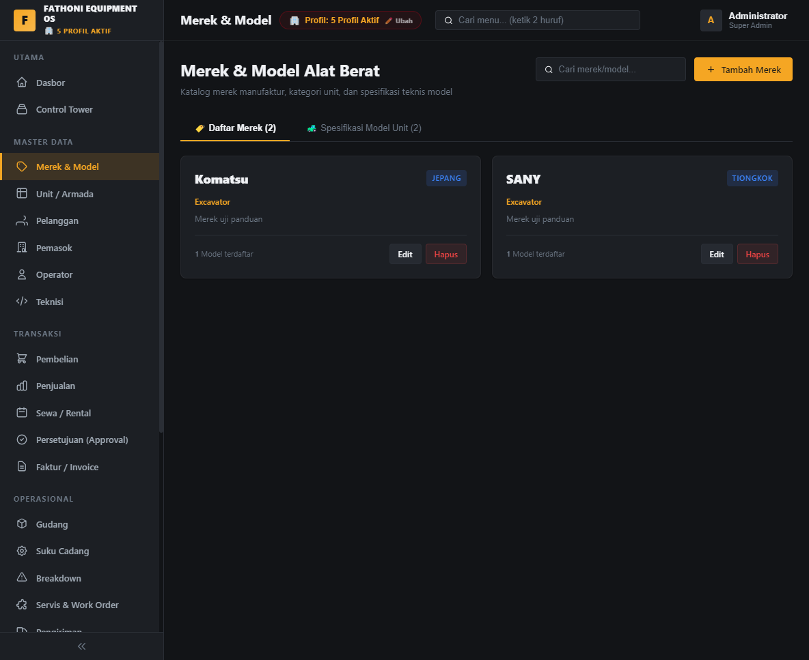
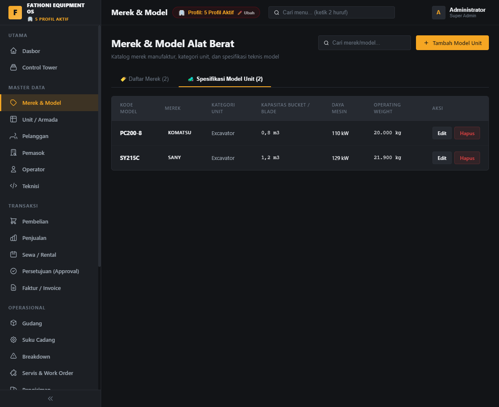
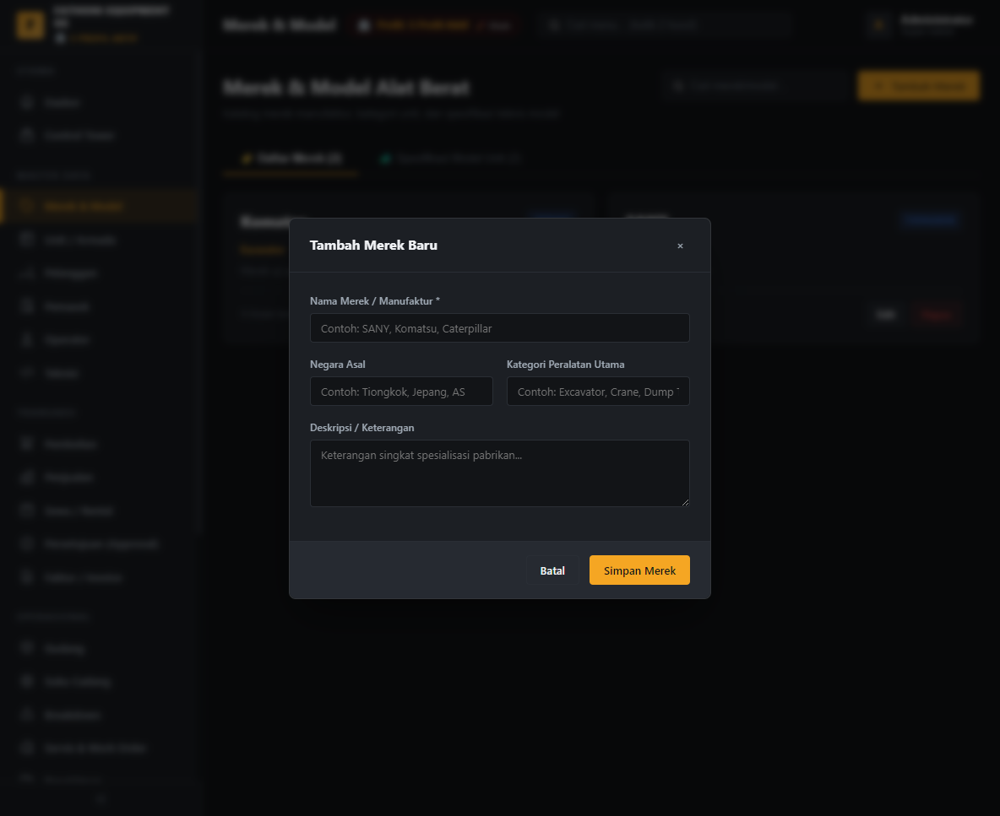
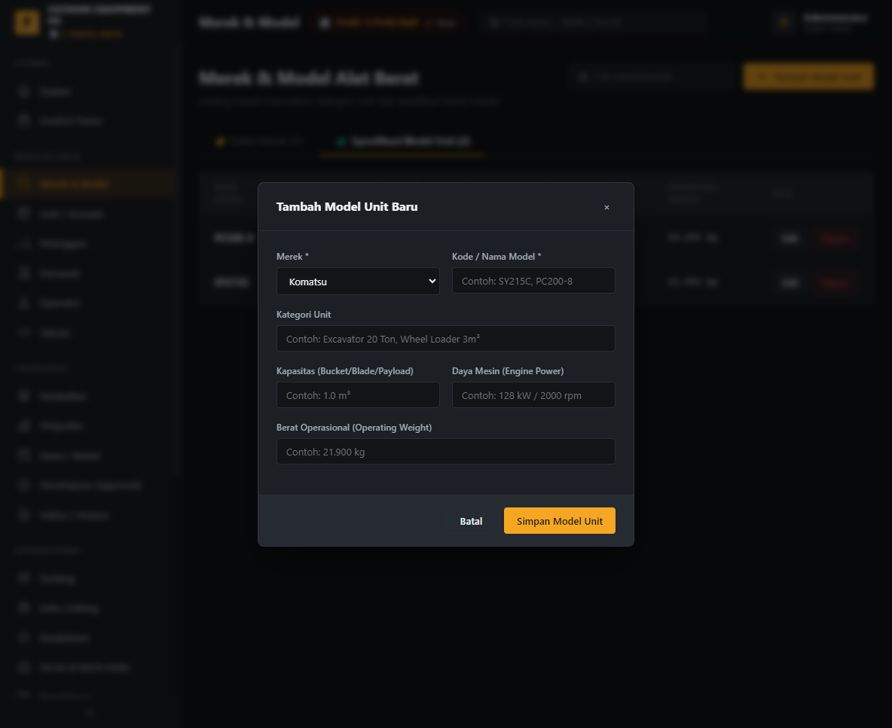

| Kelompok sidebar | Master Data |
| Alamat | #/brands (klik menu Merek & Model di sidebar) |
| Peran yang melihat | Super Admin, Sales, Gudang, Teknisi |
| Mode bisnis | menu ini tampil bila salah satu profil bisnis aktif: Dealer / Distributor, Pedagang Alat Bekas, Bengkel / Workshop, Kontraktor, Perusahaan Sewa (Rental) |
| Layar dipotret | 2 |
| Form dipotret | Tambah Merek Baru · Tambah Model Unit Baru |
Katalog merek manufaktur dan spesifikasi teknis model. Satu layar berisi dua tab: "Daftar Merek" dan "Spesifikasi Model Unit". Katalog ini adalah hulu dari seluruh data unit — form Unit mengambil pilihan merek dari sini.

Judul di layar: Merek & Model Alat Berat
Subjudul: Katalog merek manufaktur, kategori unit, dan spesifikasi teknis model
Bagian daftar layar ini memakai komponen kartu rancangan halaman itu sendiri (bukan tabel dengan judul kolom), sehingga isinya cukup dilihat pada gambar di atas.
Kolom yang ada di luar form (pencarian/pendaftar):

Judul di layar: Merek & Model Alat Berat
Subjudul: Katalog merek manufaktur, kategori unit, dan spesifikasi teknis model
Kolom tabel (2 baris terlihat pada potret):
| No. | Nama kolom persis di layar |
|---|---|
| 1 | KODE MODEL |
| 2 | MEREK |
| 3 | KATEGORI UNIT |
| 4 | KAPASITAS BUCKET / BLADE |
| 5 | DAYA MESIN |
| 6 | OPERATING WEIGHT |
| 7 | AKSI |
Kolom yang ada di luar form (pencarian/pendaftar):
Urutan kolom, nama label, tanda wajib, dan isi bawaan di bawah ini dibaca dari layar yang dipotret, bukan dari kode sumber. Tanda * adalah kolom yang memang ditahan kosong oleh aplikasi.
Dibuka dengan menekan tombol Tambah Merek.

Lebar jendela 500 px. Seluruh kolom muat tanpa menggulir pada jendela tinggi 980 px; pada jendela yang lebih pendek bagian bawah tetap perlu digulir.
| Label di layar | Jenis kolom | Isi saat jendela baru dibuka | Pilihan dropdown / teks bantu |
|---|---|---|---|
| Nama Merek / Manufaktur * | teks | Contoh: SANY, Komatsu, Caterpillar | - |
| Negara Asal | teks | Contoh: Tiongkok, Jepang, AS | - |
| Kategori Peralatan Utama | teks | Contoh: Excavator, Crane, Dump Truck | - |
| Deskripsi / Keterangan | uraian beberapa baris | Keterangan singkat spesialisasi pabrikan... | - |
Wajib diisi: tidak ada kolom bertanda wajib pada form ini.
Tombol di kaki jendela: Batal · Simpan Merek
Dibuka dengan menekan tombol Tambah Model Unit.

Lebar jendela 500 px. Seluruh kolom muat tanpa menggulir pada jendela tinggi 980 px; pada jendela yang lebih pendek bagian bawah tetap perlu digulir.
| Label di layar | Jenis kolom | Isi saat jendela baru dibuka | Pilihan dropdown / teks bantu |
|---|---|---|---|
| Merek * | dropdown (2 pilihan) | Komatsu | Komatsu; SANY |
| Kode / Nama Model * | teks | Contoh: SY215C, PC200-8 | - |
| Kategori Unit | teks | Contoh: Excavator 20 Ton, Wheel Loader 3m³ | - |
| Kapasitas (Bucket/Blade/Payload) | teks | Contoh: 1.0 m³ | - |
| Daya Mesin (Engine Power) | teks | Contoh: 128 kW / 2000 rpm | - |
| Berat Operasional (Operating Weight) | teks | Contoh: 21.900 kg | - |
Wajib diisi: tidak ada kolom bertanda wajib pada form ini.
Tombol di kaki jendela: Batal · Simpan Model Unit